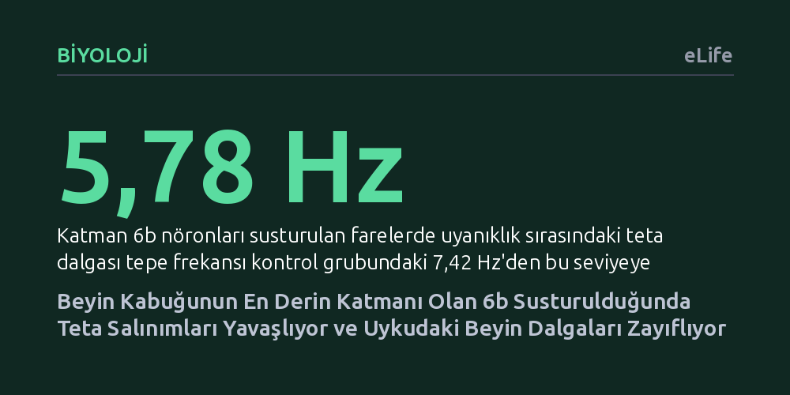

BIYOLOJI · eLife · 2026-09-09
Araştırmacılar, farelerde beyin kabuğunun en derinindeki katman 6b nöronlarını genetik olarak susturarak uyku-uyanıklık süreçlerini inceledi. Susturma toplam uyku süresini değiştirmese de uyanıklık ve REM uykusundaki teta ritimlerini yavaşlattı ve derin uykudaki elektriksel dalga gücünü belirgin biçimde azalttı.
Uyku ve uyanıklık dinamiklerinin sadece beyin sapı gibi derin merkezlerce değil, korteksin en dip tabakasındaki nöronlar ve oreksin sinyalleşmesiyle de hassas biçimde ayarlandığını gösterir.

Memeli beyninin en belirgin mimari özelliği, neokorteks olarak adlandırılan beyin kabuğunun altı katmanlı yapısıdır. Bu tabakalar dıştan içe doğru duyusal algı, motor kontrol ve karar alma gibi kritik görevleri paylaşır. Ancak bu katmanların en derininde, beyaz cevherin hemen kıyısında yer alan 'Katman 6b' (L6b), bugüne kadar korteksin en az incelenmiş ve işlevi en az anlaşılmış bölgesi olarak kalmıştır. Evrimsel süreçte memeliler arasında korunmuş olan ve gelişim sırasında beynin erken devrelerini kuran embriyonik 'subplate' yapısından arta kalan bu nöronların erişkin beyindeki rolü uzun süredir aydınlatılamamıştı.
Katman 6b'yi dikkat çekici kılan en önemli özellik, uyanıklığı yöneten talamus çekirdekleriyle ve korteksin ana çıkış katmanı olan 5. katmanla kurduğu zengin çift yönlü bağlantılardır. Üstelik bu hücreler uyanıklığı doğrudan tetikleyen nöropeptit oreksine karşı oldukça duyarlıdır. Klasik nörobilim anlayışı uyku ve uyanıklık geçişlerinin ağırlıklı olarak hipotalamus ve beyin sapı gibi korteks altı merkezlerce kontrol edildiğini kabul eder. Ancak beynin derinliklerine gizlenmiş bu korteks katmanının, uyanıklık kimyasallarına yanıt vererek tüm beyin kabuğuna yayılan ritmik dalgaları doğrudan etkileyip etkilemediği sorusu ortada duruyordu.
Araştırma ekibi bu gizemli tabakanın işlevini test etmek amacıyla genetik mühendisliği yöntemlerinden yararlandı. Farelerde katman 6b'deki uyarıcı nöronları görece seçici biçimde hedefleyen Drd1a-Cre fare soyu kullanıldı. Nöronlar arasındaki kimyasal iletişimi ve vezikül salınımını sağlayan temel proteinlerden biri olan SNAP-25, bu hücrelerde doğumdan itibaren silindi. Böylece somatosensör korteksteki katman 6b nöronlarının yaklaşık yüzde 25 ila 40'ı fonksiyonel olarak susturuldu.
Susturulmuş fareler ile genetik müdahale yapılmamış kardeş kontrol hayvanlarının beyinlerine elektrotlar yerleştirilerek kronik elektroensefalografi (EEG) ve elektromiyografi (EMG) kayıtları alındı. Beynin ön (frontal) ve arka (oksipital) bölgelerinden toplanan elektriksel sinyaller üç ayrı deneysel koşulda incelendi: Normal 24 saatlik döngüde, uyku baskısını artırmak için uygulanan 6 saatlik uyku yoksunluğu boyunca ve uyanıklık sağlayan oreksin peptitlerinin beyin karıncığına enjekte edilmesinden sonra. Araştırmacılar böylelikle nöron susturmanın toplam uyku miktarını mı yoksa beyin dalgalarının kalitesini mi değiştirdiğini doğrudan takip etti.
Elde edilen ilk çarpıcı bulgu, katman 6b nöronları susturulan farelerin 24 saatlik toplam uyanıklık, NREM ve REM uykusu sürelerinin kontrol grubuyla neredeyse tamamen aynı kalmasıydı. Uyku evrelerinin bölünme sıklığı ve kısa uyanmalar da değişmedi. Ancak EEG dalgalarının spektral frekans analizine bakıldığında beynin elektriksel ritminde belirgin bozulmalar saptandı. Katman 6b'si susturulan farelerde uyanıklık ve REM uykusu sırasında bellek ve yön bulmayla ilişkili teta dalgalarının tepe frekansı anlamlı ölçüde yavaşladı; örneğin uyanıklıktaki tepe frekans kontrol hayvanlarındaki 7,42 Hz seviyesinden 5,78 Hz'e geriledi.
Değişimler derin (NREM) uyku evresinde de devam etti. Susturulmuş hayvanların frontal korteksinde, özellikle uykuda hafıza pekiştirmesiyle ilişkili uyku iğciklerinin bulunduğu frekans bandı başta olmak üzere toplam elektriksel beyin gücünde yaygın bir düşüş kaydedildi. 6 saatlik uyku yoksunluğu uygulandığında normal farelerde görülen uyanıklık teta gücü artışı susturulmuş farelerde zayıf kaldı. Dahası, yoksunluk sonrası toparlanma uykusunun ilk iki saatinde, biriken uyku borcunu temsil eden yavaş dalga aktivitesinin (SWA) azalma hızı kontrol grubuna göre yarı yarıya yavaşladı. Beyne dışarıdan oreksin A verildiğinde her iki grup da uyanık kaldı; fakat katman 6b'si susturulan grupta uyanıklık süreleri daha uzun olmasına rağmen bunu izleyen toparlanma uykusunun yavaş dalga kalitesi daha düşük seviyede kaldı.
Bu sonuçlar, katman 6b nöronlarının uykunun süresini değil, uykunun ve uyanıklığın elektriksel kalitesini ve salınımsal mikro yapısını düzenlediğini açıkça gösteriyor. Beyin kabuğunun en dip katmanında yer alan bu hücreler, korteksin ana çıkış kapısı olan 5. katman ve talamusla sürekli iletişim kurarak beynin ritmik dalgalarını koordine eden yerel bir denetleyici gibi çalışıyor. Bugüne dek uyanıklığın yalnızca korteks altı merkezlerin bir eseri olduğu düşünülürken, bu bulgu korteksin kendi derin devrelerinin oreksin sinyallerine aracılık ederek uyanıklık kalitesini şekillendirdiğini kanıtlıyor.
Çalışma, uyku bozukluklarının ve bazı psikiyatrik tabloların altında yatan hücresel mekanizmalara dair de önemli ipuçları taşıyor. Embriyonik dönemde subplate tabakasının gelişimindeki aksaklıklar veya katman 6b devrelerindeki işlev kayıpları, toplam uyku süresi normal görünse dahi bireylerde dinlendirici olmayan, dalga gücü zayıflamış ve teta ritimleri bozulmuş bir uyku mimarisine yol açabilir. Gelecekte katman 6b devrelerini ve oreksin duyarlılığını hedefleyecek daha özgül yaklaşımlar, uyku kalitesini onarmaya yönelik yeni stratejilere zemin hazırlayabilir.